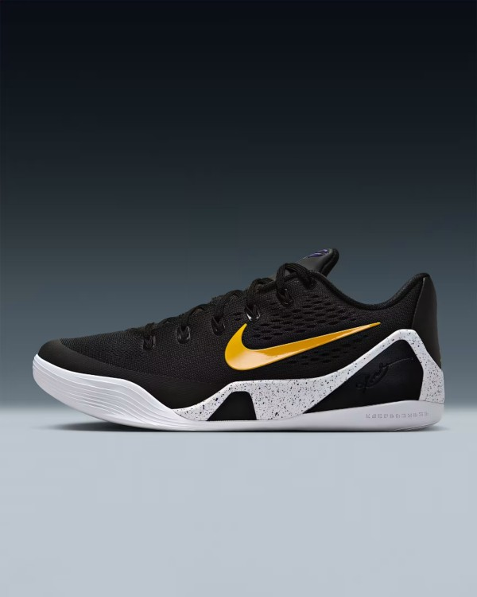
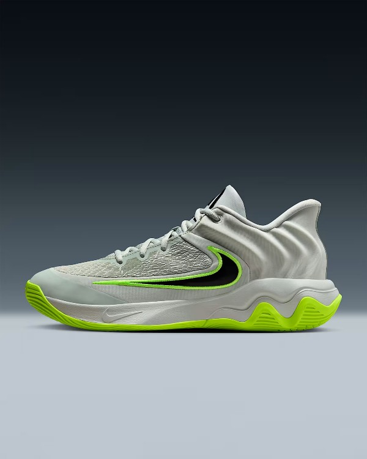
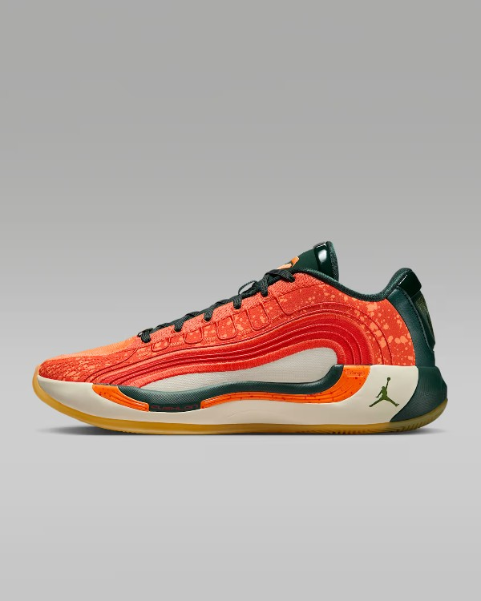

Shoes
Explore Our Exclusive Selection of Nike Shoes
Step into style and performance with our curated collection of Nike footwear. Whether you're chasing
your next personal best or looking for everyday comfort, our Nike selection has something for everyone.
From the iconic Air Max and Air Force 1 to the latest in React and Zoom technology, each pair combines
innovative design with unmatched comfort.We carry a wide range of Nike shoes for men, women, and kids —
including running shoes, basketball
sneakers, casual streetwear, and training footwear. Our selection features both timeless classics and
the newest releases, so you can stay ahead of the game in style and function. Looking for bold colors,
limited editions, or sleek minimalist designs? You'll find them here. Every pair we stock is 100%
authentic and chosen with quality and style in mind. Whether you're shopping for athletic performance,
all-day comfort, or the latest sneaker trends, you'll find the perfect Nike fit here.
Browse our Nike collection today and discover why it's one of the most trusted names in sportswear.
Great style, unbeatable performance — just do it.
Basketball Shoes
 Kobe IX Elite Low EM Protro $190
Kobe's comeback from a torn Achilles inspired generations of past, present and future hoopers to keep fighting. This Kobe IX brings back the shoe that supported the Black Mamba during his triumphant return to the floor and gives it an upgrade. An engineered mesh upper complements a springy responsive React foam in Kobe's updated low-top masterpiece.  A'One "Sunshine" $115
A'One "Sunshine" $115
Even on the gloomy days, A'ja still tries to find a way to shine. This A'One symbolizes happiness and helps bring out the energy of optimism. The layers of yellow gradually become brighter from the inner core to the outer limits, so you and A'ja can stunt on the floor. And to help keep her smiling, plush Cushlon 3.0 foam provides unapologetic comfort.
 LeBron NXXT Genisus QS $170
LeBron NXXT Genisus QS $170
With lightweight, supportive mesh and flexible Air Zoom cushioning for all-game speed, the LeBron NXXT Genisus gives you the tools you need to redefine the game. This version nods to one of LeBron's favorite board games and his willingness to make deposits in the everyday grind that pays dividends.
 A'One "Sunshine" $115
The Giannis Immortality 4 is for the multifaceted player. The sleek, supportive heel shape combines with an upgraded traction pattern from the previous iteration to help keep you making all those game-changing plays.
 Luka 4 "Gone Camping" $101.97
When Luka's not on the court, there's a good chance he's gone camping. This Luka 4 honors the age-old tradition of getting outdoors with a speckled, nature-inspired design. Add in Cushlon foam, an Air Zoom unit and an IsoPlate and you have all the comfortable cushioning and stable support you need to bring your game to the next level.